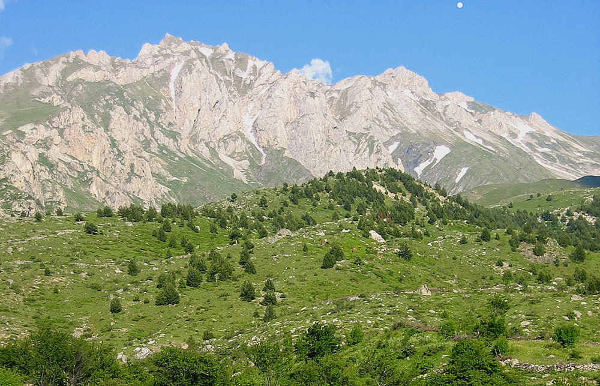
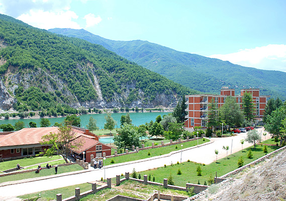
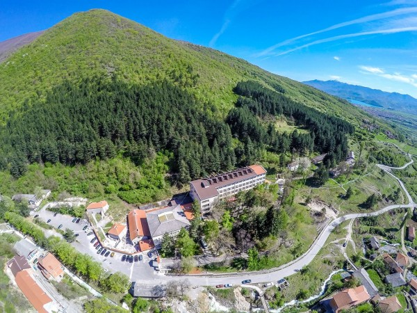
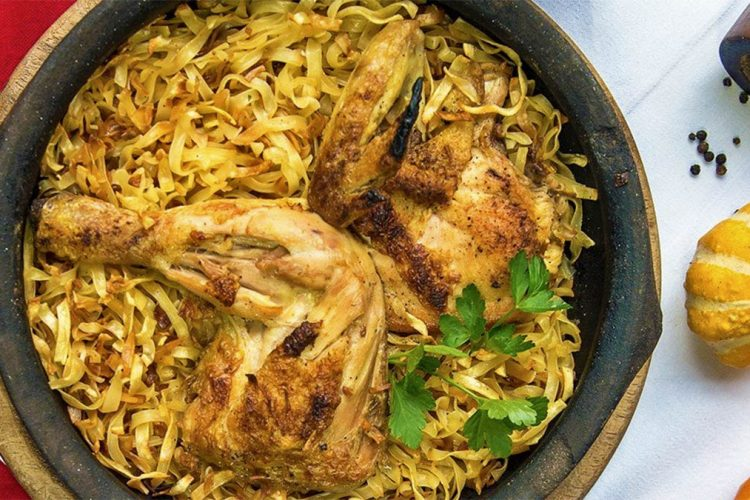
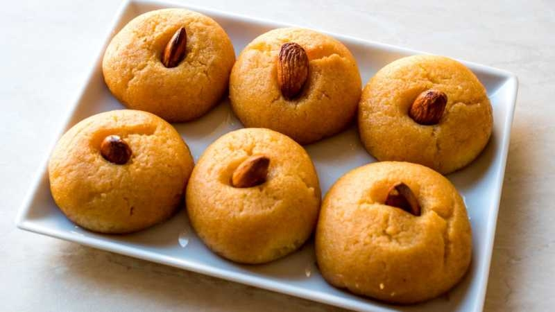
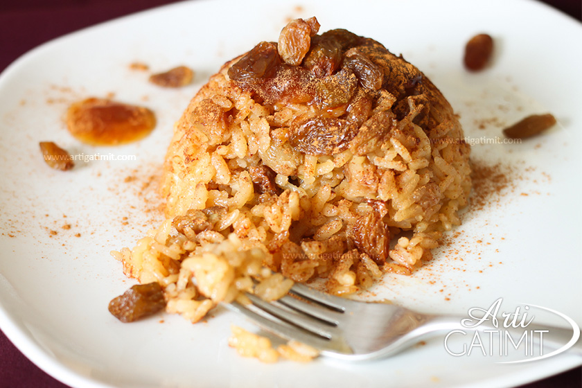
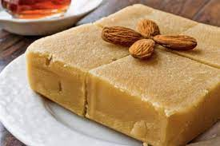
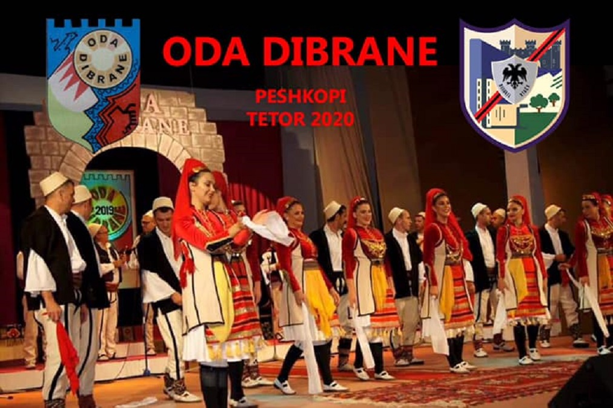
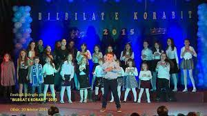
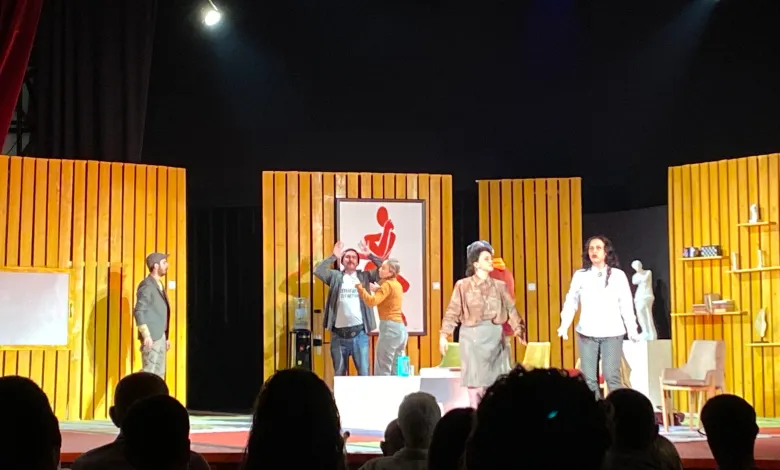

Lake Dibre is an artificial lake in the western part of North Macedonia near the city of Dibre, after which it is named. A dam in Spil blocks the Black Drin, the second longest river in the state. Lake Dibra has an area of 13.2 km² and is thus one of the largest lakes in North Macedonia. It is 92 meters deep and sits at a height of 580 meters above the Adriatic Sea. The artificial lake was created between 1966 and 1968, after the existing dam in Spil was increased to 102 meters.

A place rich in rare natural beauty, with stones, rocks and pastures, which is visited by numerous associations of mountaineers who manage to climb to its peak, which has a height of 2764 m. From the Macedonian side, you can travel to the villages of Reka by traveling from Dibra e Madhe-R.Macedonia to some of these villages such as: Nistrovo, Bibaj, Zhuzhnje, Rimnica, Grekaj, Tanushaj, Nivisht as well as the rest of Strazimir, where mountain climbing is organized every year. The Korab range extends over 40 kilometers in the north-south direction between the lower part of the Black Drin and its tributary Radika. It is located around the border triangle of Albania, Macedonia and Kosovo, in the southwest of the mountains of Shari. Korab is a very rugged mountain massif and consists mainly of Paleozoic shale and limestone with blocky structures, as well as some heavily weathered Permian Triassic gypsum rocks.

At an altitude of 880 m above sea level, in the heart of a mountain belt filled with tall pines, there is the oldest resort in the region named Banjisht. The calm and relaxing atmosphere is not all that this resort offers and we have dedicated special importance to our medical services with thermo-mineral waters that also offer many activities to keep you in shape and regenerate your health.With respect for history and tradition, as well as not to spoil the beauty and harmony that has reached the highest peaks in this holy place, Banjishti has preserved its traditional architectural appearance. Inside, the resort offers modern and luxurious accommodation not only to spend a night, but also to enjoy the spas for a longer period.

At an altitude of 880 m above sea level, in the heart of a mountain belt filled with tall pines, there is the oldest resort in the region named Banjisht. The calm and relaxing atmosphere is not all that this resort offers and we have dedicated special importance to our medical services with thermo-mineral waters that also offer many activities to keep you in shape and regenerate your health.With respect for history and tradition, as well as not to spoil the beauty and harmony that has reached the highest peaks in this holy place, Banjishti has preserved its traditional architectural appearance. Inside, the resort offers modern and luxurious accommodation not only to spend a night, but also to enjoy the spas for a longer period.
THE HISTORY OF DIBRA
The name of the city of Dibra is mentioned since the fifth century BC by Herodotus, and later in the first century AD by Strabo and Pliny. These mention the Illyrian tribe, the tribe of the Dobers, who founded their city named Dober. Ptolemy in the second century of our era confirms in his maps the plan of the city called Dober or Doberos and its inhabitants Doberets. Archaeological and historical research so far confirms that Dibra is the successor of the city of Doberos, from which the present name Dibër derives. Dibra was a well-known commercial and handicraft center in the past and played an important role in the history of this region. This city was the main crossroads of this region through which the Via Egnatia also passed. In 1502, it was recognized as an important civic center. In the 30-40s of the century XIX, had nearly 8400 inhabitants and 250 shops, and was one of the most important economic centers. In 1909, the Dibra Congress was held in Dibër, this congress, although it was organized by the Young Turks and brought little service to the National Movement, for the first time he first made it possible for the Albanian language to be taught in schools in a legal way within the Ottoman Empire. Until 1911, Dibra was one of the most developed countries in the region in terms of economy, crafts, trade, constructions and its special architecture but also on the cultural-social level. At that time, Dibra had 10,000 inhabitants and 489 shops. But after the turmoil and the Balkan wars, this country lost its importance, so that today it is one of the most underdeveloped countries in Macedonia. Dibra is a city without villages, since most of the villages remained beyond the borders, practically in Albania. The city suffered economic degradation and all-round cultural degradation.
TRADITIONAL FOOD OF DIBRA

Boil the chicken in salted water in a pressure cooker for 15 minutes. I use corn-fed chicken, from the yellow ones, as they are tastier. Then we cut it into pieces, or leave it whole if desired. DONE
Place the pasta in a pan and sprinkle half of the butter on the surface. Bake them at 250°C until they take on a reddish color on all sides, stirring occasionally. Add the strained chicken stock until the noodles are covered a finger below their level (I needed 5 cups of tea), place the chicken pieces on the surface, a few sprigs of thyme, the rest of the butter and bake for 20-25 minutes, until the pasta has completely absorbed the liquid. DONE
This is the variant of how I prepare chicken noodles in the oven. If desired, you can add onions fried in butter, tomatoes, oregano, etc. We like them flavored with just a little thyme.

Ingredients:
1 kg of butter
1 kg of flour
15 egg yolks (one whole egg)
Melt the butter in a pan, skimming off the foam, and after it has taken on a golden color and has a good aroma, remove it from the heat. After it cools down, add the eggs and mix well until it becomes a manageable mass. Then we add the flour and mix it well again until we get the right amount as a slightly hard dough but to create a grain. I arranged them in the pan and decorated the grains a little. I baked it at a temperature of 160*C/320*F for 1 hour and a half
Sherbet: 1.5 liters of water + 1,300 g of sugar, boil for 10 minutes, add a tablespoon of lemon juice and add to the sugar bowl. Both the sugar syrup and the sorbet should be lukewarm.

1 glass of rice water
2 glasses of water
250 or 300 g of raisins
400 grams of sugar
cinnamon and cloves for flavor.
A little butter for frying the rice (3 or 4 tablespoons)
Preparation:
In a pot, melt the butter and then add the rice (rinsed from the dirt before) and start stirring it together, frying it a little. The rice should get a slightly reddish color during frying. After the rice is fried, add the water and stir while adding the water. Then let the rice boil. After the water runs out and the rice is well cooked, remove it from the heat and let it cool for approximately 5 minutes (because when the rice is very hot, the sugar melts immediately).
In another container, we begin to lay a layer of rice and on its surface we add the open sugar evenly, cinnamon, raisins and a little clove for flavor. Then we start with the next layer, the same procedure as before, until we reach the last layer.
Even on the surface of the last layer, add sugar, cinnamon, raisins and some cloves. Once the rice is a little warm, cover it with another container to melt the sugar. A sherbet-like brown liquid will form at the bottom of the pot, which is the melted sugar. Then the kabounia is ready and can be served.

Ingredients:
125 g of butter,
1 1/2 cups milk,
1 cup of sugar,
1 cup of nuts,
1 glass of flour.
Preparation:
Melt the butter in the pan and add the flour. Fry the latter until it turns yellow.
After the flour is fried, pour the warm milk slowly, so that it does not become lumpy. Then add the sugar while stirring.
At this point, the halwa is ready. We shape it as desired and place the nuts on top. You can throw the nuts in as well, it depends on your desire.
Enjoy your meal!
DIBRA EVENTS

The Oda Dibrane Festival began its life in 1994 in Peshkopi, Albania and has now become a meeting - a tradition where the latter was reflected in a very special genre, that of humorous song and dance, ritual and allegory. This The festival aims to unite Albanian artists wherever they are, regardless of borders, with the idea that "Oda Dibrane" will be the host of "Albanian Chamber". This is an original meeting of its kind which aims to reawaken the unique values of our culture in the framework of cultural tourism. In this festival, ancient rites as well as typical Albanian musical instruments are presented. During the days of the Festival, various talks, photographic exhibitions with folkloric motifs, exhibitions of figurative arts by Dibra painters, visits to cultural monuments of the area, etc. take place.

Bilbilat e korab is a festival that takes place every year in the Diber Palace of Culture. Children who have talent themselves participate in this festival, here children compete to get the 1st place. This festival has been practiced since 2009. People who are interested in listening to songs sung by children can come here to listen.

In Dibër, the 21st edition of the "Albanian Theater in Macedonia" festival has begun at the "Qemal Ajdini" theater. On this occasion, Dibra art lovers will attend performances selected from North Macedonia, Albania and Kosovo until June 30, writes Portalb.mk. The festival opened on Friday with the theater troupe of Skopje with the drama "Murlin Murlo" by N. Klojada and directed by Kristina Dimitrova. "Ultra" theater from Kumanova appeared on stage on Saturday night with the play "Mjekimi" by E.Walsh directed by Qazmedin Nuredini. While last night the Gostivari Theater took the stage with the comedy "Ves Ves" by L. Baffie directed by Kushtrim Bektesh. Tonight the KE Theater "Kujtim Spahivogli" from Tirana is expected to take the stage with the play "Light Pain" by H. Pinter in directed by Drini Hasani. On the 28th, the National Theater of Prishtina will perform the drama "Muslimani", the author and director of the play is Enver Petrovci.
Digital school, the presentation always happens at the end when a group of students finish a type of programming language, they present their projects to their parents and to the instructors and the director of the digital school. And then they decided whether they want to continue the digital school